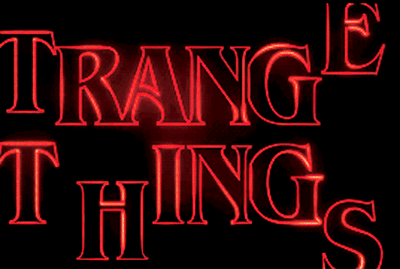
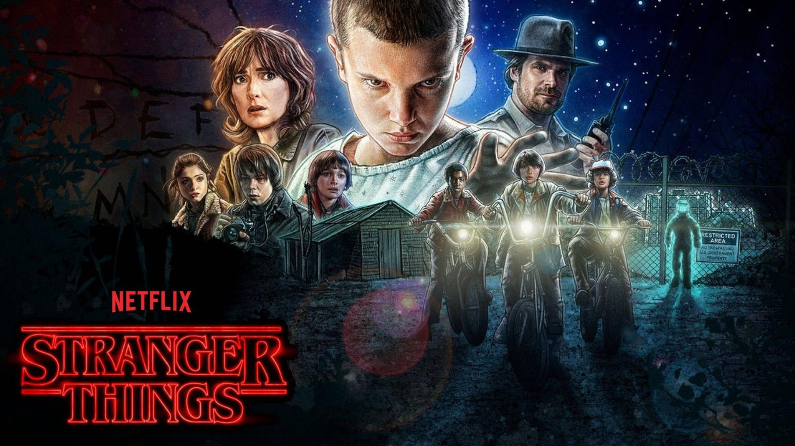
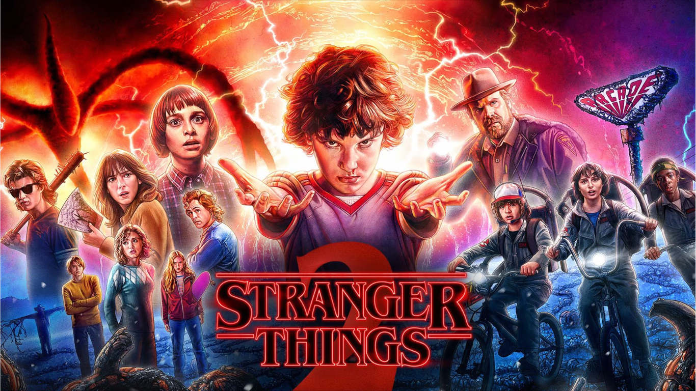
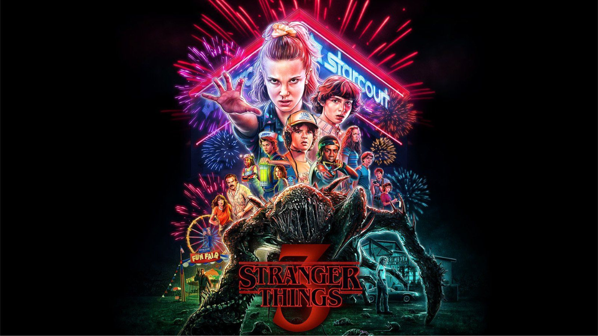
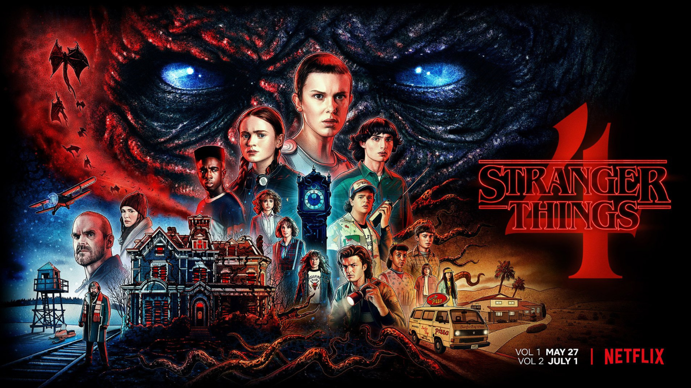
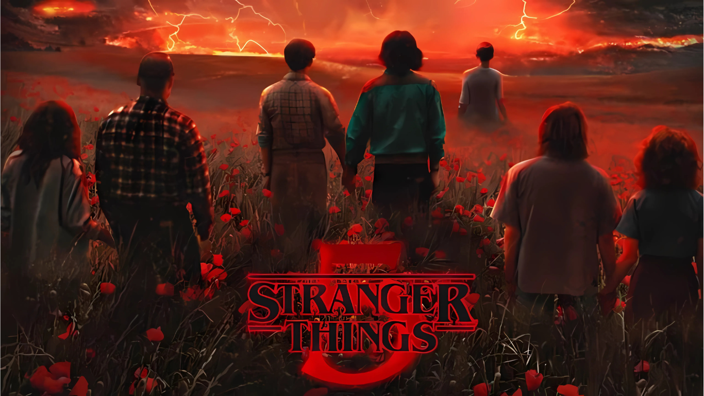
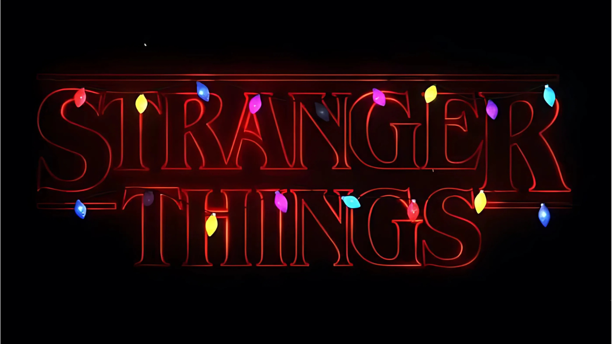
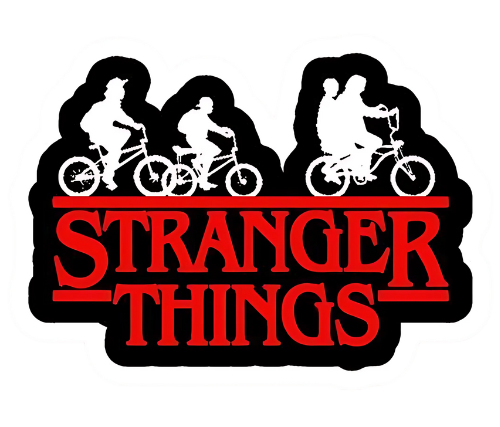

Stranger Things é uma série de ficção científica da Netflix que acompanha a busca por um garoto desaparecido, levando à descoberta de segredos governamentais, forças sobrenaturais e uma misteriosa menina com poderes.